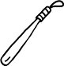

Bacak kadar çocuklara simsiyah önlükler giydirip her sabah tek sıra and içiren, kimse pencerelerden dışarı bakamasın diye sınıf pencerelerini külrengine boyayan, yaratıcılıktan ziyade ezberciliği, bireyselleşmeden ziyade sürüleşmeyi, eleştirel düşünceden ziyade sorgusuz sualsiz itaati belleten ve sistematik dayak içeren Türk eğitim sistemi okuma yazmayı "fiş"lerle öğretmişti hepimize. Her öğrencinin küçük, kişisel fişleri vardı, bir de sınıf tahtasında asılı devasa fişler. O devasa fişlere baka baka her çocuk kendi minik fişlerine çekidüzen verirdi. Sonra okurduk hep bir ağızdan: TUT-ALİ-TO-PU-TUT... YA-KA-LA-A-Lİ-YA-KA-LA..." İçimize, hücrelerimize sinmiş. "Fiş" demek "emir kipi" demek toplumsal bilinçaltımızda. "Fiş" demek yakalanacak birileri, tutulacak bir hedef var bir yerlerde demek. Şartlanmışız, bekliyoruz tetikte. Karatahtadan gelen emir kipini duyar duymaz, biz de pürnizam cici cici oturduğumuz sıralarda kendi minik fişlerimize çekidüzen vereceğiz. Sağım solum, önüm arkam düşman dolu öğretmenim. İlerde, iki sıra önümde sol görüşlü bir öğrenci var, dili kürek kadar, sorguluyor sistemi, YÖK'ü protesto ediyormuş, duydum, kan revan yediği coplara rağmen kafasına kafasına, düşünemesin, aptal olsun diye coplar hep kafayı hedef alır, ama hâlâ utanmadan düşünüyor öğretmenim, TUT-A-Lİ-TUT. İki sıra arkamda türbanlı bir kız öğrenci, hem okumak, eğitim ve meslek sahibi olmak hem de türban takmak istiyormuş öğretmenim, ikisini birden aynı anda, TUT-A-Lİ-TUT.
Üç sıra önümde bir Ermeni oturuyor, demek hâlâ Ermeniler kalmış bu memlekette, valla doğrusu bi şey yaptığını görmedim; ama Ermeni asıllı olması başlı başına kabahat değil mi öğretmenim, TUT-A-Lİ-TUT. Arka sıralarda oturan şu kadın feministmiş öğretmenim, memnun değilmiş toplumsal, kültürel ve kurumsal düzeyde tıkır tıkır işleyen ataerkillikten, cinsiyetçilikten, Güldünya isimli bir kadın öldürüldü diye tepki duyuyormuş, ona ne oluyorsa, TUT-A-Lİ-TUT.
En öndeki öğrenci yazar mı, şair mi, kalem ehli imiş öğretmenim, hayal kurabilmek istiyormuş, kursun kurmasına da kendine saklasın hayallerini, yok illaki yazacak, kaleme alacak, hayalleri sakıncalı, TUT-A-Lİ-TUT. Bir de şuradaki akademisyeni gözüm tutmuyor öğretmenim, entelektüel, toplum yukardan aşağıya değil aşağıdan yukarıya akmalı, tepeden inme kurallarla değil sivil toplumda harekete geçen kişisel ve kolektif dinamiklerle yenilenmeli, değişmeli, demokratikleşmeli diyormuş öğretmenim, TUT-A-Lİ-TUT...
Hepsini yakaladım tuttum öğretmenim, fişlerime yazdım teker teker isimlerini, cisimlerini. Ama hâlâ varlar. Ne kadar çoklar. Neyse ki çok olduklarının farkında değiller. Çünkü birbirlerini dinlemekten acizler. Olanca güçlerini birbirlerini didiklemeye ayırmaktalar öğretmenim. Sol görüşlü öğrenci türbanlı kızla, sağ görüşlü gazeteci bir feminist kadınla hiçbir ortak noktası olamayacağına körü körüne inanmış, birbirlerini karalamakla meşguller. Ben bunları tutmasam da olur öğretmenim. Nasıl olsa birbirlerine dil uzatmaktan fırsat bulup da ortak noktalarını, ezilmişlik paydalarını konuşmaya, o ortak payda üzerinde yükselerek sistemi beraberce dönüştürmeye, demokratikleştirmeye ve sadece vatan-daş değil, aynı zamanda fiş-daş da olduklarını görmeye zaman bulamayacaklar.
BI-RAK-A-Lİ-BI-RAK... TUT-MA-SAN-DA-O-LUR...
Arizona